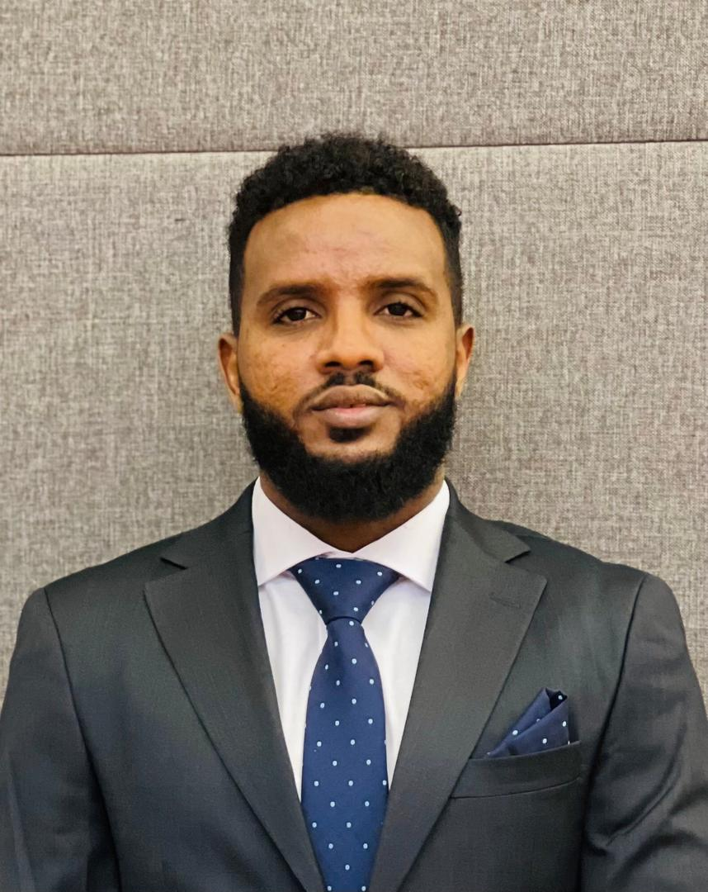

I am Farhan Abdulwahab, a research consultant with passion for helping organizations achieve their objective and goals of the project and ensure the smooth and conflicts-free functioning of all operations of the organization as a whole.
Experienced consultant based in Mogadishu. I am having over 12 years of experience in data collection service. As supervisor, i provide data collection services to a wide range of sectors.
I have recent experience of assessment supervisor for DRC, NRC, REACH INITIATVE, NTERSOS, save the children, ACTED, Samuel Hall and lime group consulting Africa and others in Somalia..
